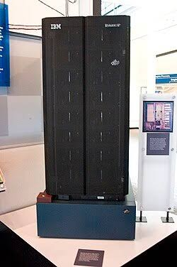
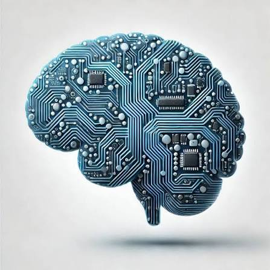

Origin Story
AI officially started as early as the 1950s and evolved in many ways that are not commonly discussed. In fact, AI was around in a form that is very different from what you think of when you think AI today! It was simply computer algorithms that could execute human logic. In fact, the program the beat chess champion Garry Kasparov is AI, even though it is very different from what we think of as AI today!
Timeline
Milestones
1943-Neurons Paper
Paper was published by Warren McCulloch and Walter Pitts describing the first mathematical model of artificial neurons.
1950-Turning Test
A paper was published by Alan Turing proposing the Turing Test, a test used to see if a machine can behave in an indistinguishable way from a human. This test is still used today and can be applied to many different things that a computer can do, such as text output. It can be used to compare computer speech, or how the computer outputs text, to human speech.
1956-Darmouth Conference
At this conference, John McCarthy came up with the term Artifical intelligence
Time Periods
1950s-1960s: Early Optimism
Initial breakthroughs such as Arthur Samuel’s checkers-playing program and the ELIZA program, which was an early chatbot.
1970s-1980s: AI writers
Progress slowed because of insufficient processing power in computers, which is why it is known as the AI winters.
1990s-2000s Expert Systems and Games
Expert systems, which were designed for specific narrow tasks, where how AI made a comeback. A major milestone was when Deep Blue defeated world chess champion Garry Kasparov.

2010s-Today: Deep Learning and Generative AI
Internet data and major increases in the processing power of computers fueled the rise of deep learning, which is how AI is able to independently learn and improve. This led to breakthroughs such as self-driving cars and voice assistants, and ultimately, what you think of as AI.

Sources:
Google Gemini: gemini.google.com